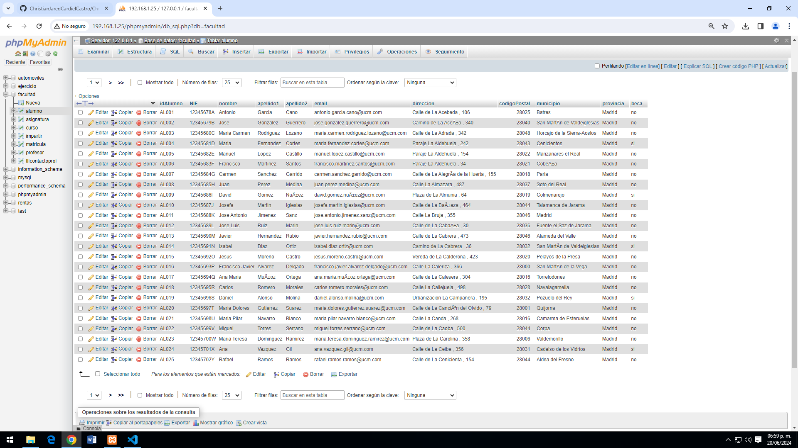
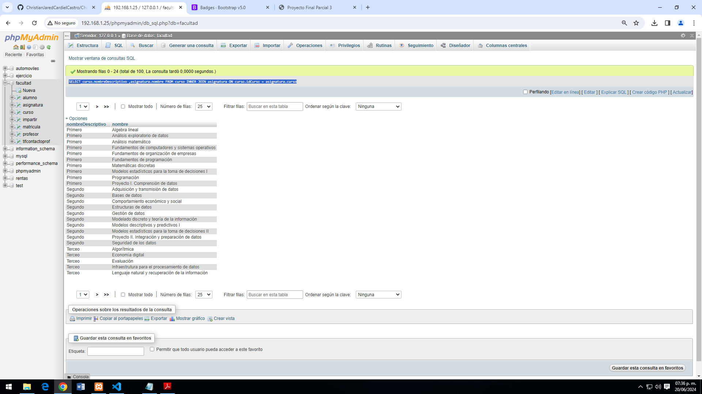
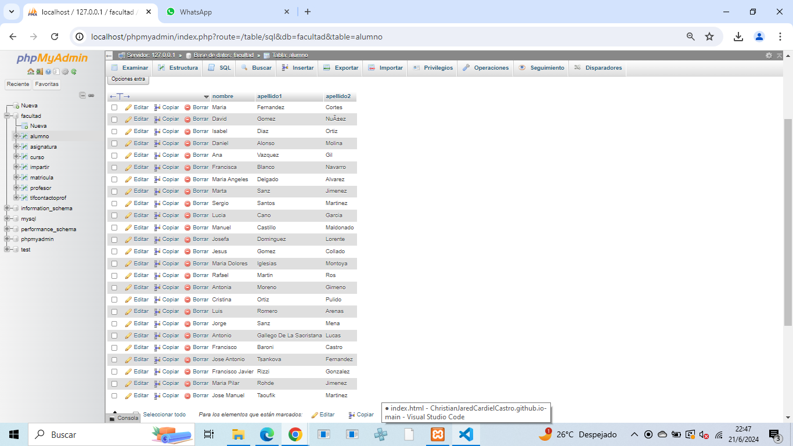
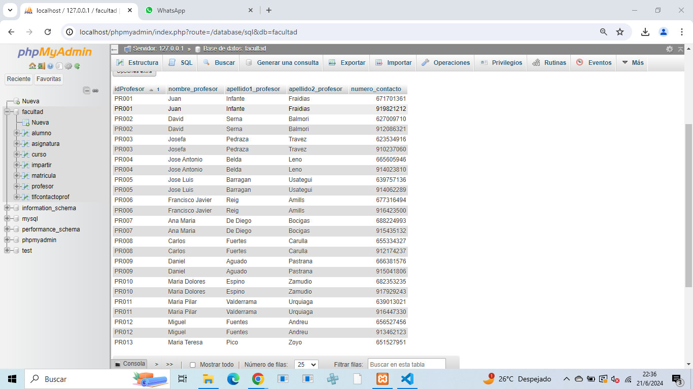
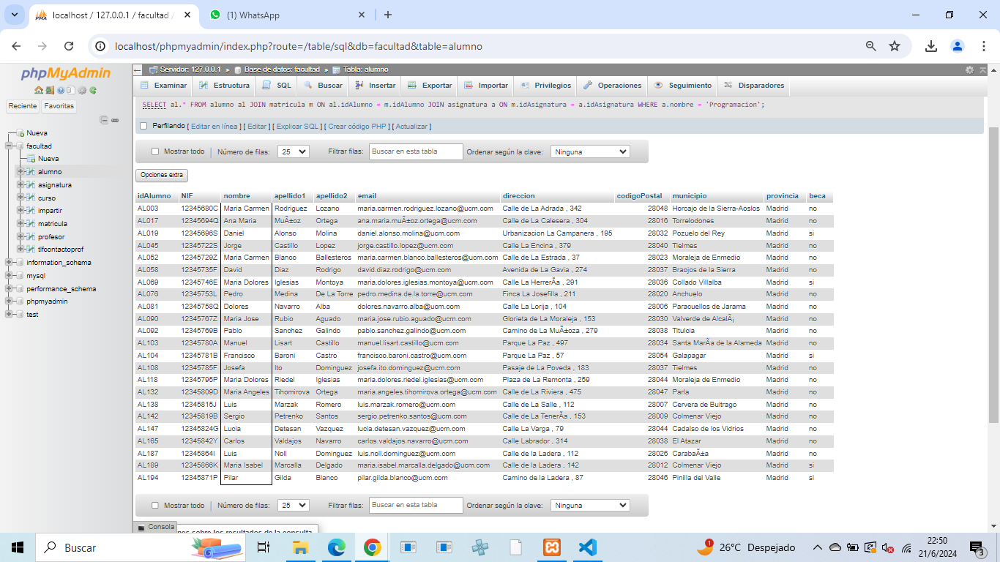
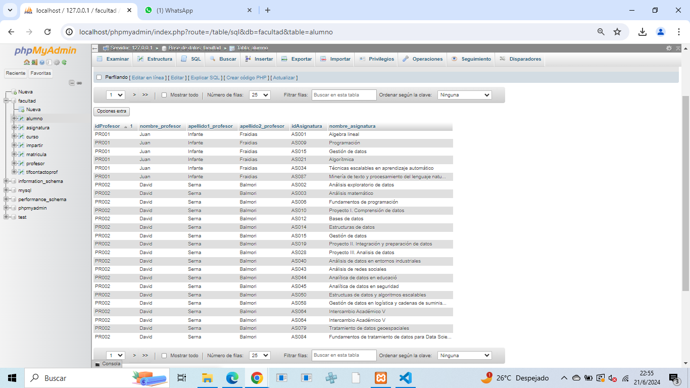
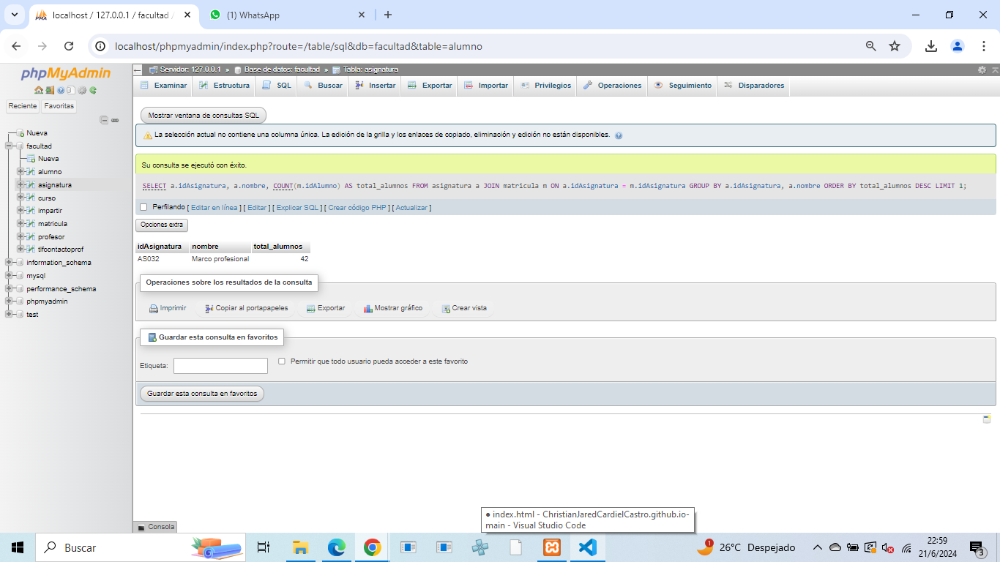
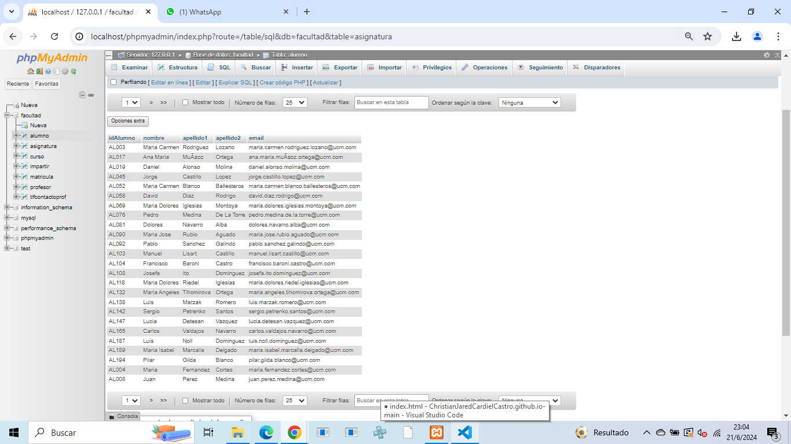
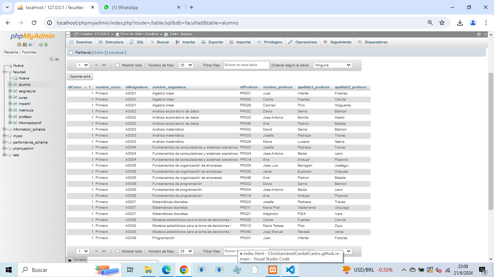
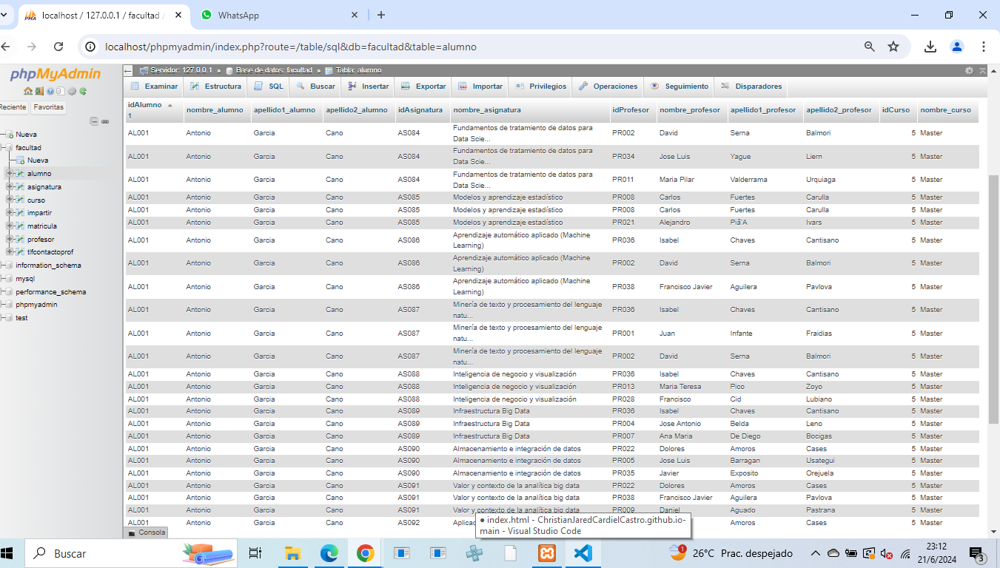

Proyecto final Parcial 3
SELECT * FROM alumno
Consulta #1.Obtener el listado de todos los alumnos de la Facultad.

SELECT curso.nombreDescriptivo ,asignatura.nombre FROM curso INNER JOIN asignatura ON curso.idCurso = asignatura.curso
Consulta #2.Obtener el listado de cursos(nombres) y las asignaturas que tiene.

SELECT alumno.nombre, alumno.apellido1, alumno.apellido2 FROM alumno WHERE beca = 'si';
Consulta #3.Obtener el listado de cursos(nombres y apellido) de alumnos que tengan beca.

SELECT p.idProfesor, p.nombre AS nombre_profesor, p.apellido1 AS apellido1_profesor, p.apellido2 AS
apellido2_profesor, t.telefono AS numero_contacto FROM profesor p JOIN tlfcontactoprof t ON p.idProfesor = t.idProfesor ORDER BY p.idProfesor;
Consulta #4.Obtener el listado de profesores, y su numero de contacto.

SELECT al.* FROM alumno al JOIN matricula m ON al.idAlumno = m.idAlumno JOIN asignatura a ON m.idAsignatura = a.idAsignatura WHERE a.nombre = 'Programacion';
Consulta #5.Obtener el listado de alumnos que estan inscritos a la asignatura de programacion

SELECT p.idProfesor, p.nombre AS nombre_profesor, p.apellido1 AS apellido1_profesor, p.apellido2 AS apellido2_profesor,
a.idAsignatura, a.nombre AS nombre_asignatura FROM profesor p JOIN impartir i ON p.idProfesor = i.idProfesor JOIN asignatura a ON i.idAsignatura = a.idAsignatura ORDER BY
p.idProfesor, a.idAsignatura;
Consulta #6.Obtener el listado de profesores y asignaturas que imparten

SELECT a.idAsignatura, a.nombre, COUNT(m.idAlumno) AS total_alumnos FROM asignatura a JOIN matricula m
ON a.idAsignatura = m.idAsignatura GROUP BY a.idAsignatura, a.nombre ORDER BY total_alumnos DESC LIMIT 1;
Consulta #7.Mostrar la asignatura que tiene mas alumnos inscritos y su total.

SELECT a.idAlumno, a.nombre, a.apellido1, a.apellido2, a.email FROM alumno a JOIN
matricula m ON a.idAlumno = m.idAlumno JOIN impartir i ON m.idAsignatura = i.idAsignatura WHERE i.idProfesor = 'PR048';
Consulta #8.Obtener listado de alumnos que les da clase el rpofesor con ID PR048(Jose Manuel) sin importar en que asignatura este inscrito.

SELECT c.idCurso, c.nombreDescriptivo AS nombre_curso, a.idAsignatura, a.nombre AS nombre_asignatura, p.idProfesor, p.nombre AS nombre_profesor, p.apellido1 AS apellido1_profesor, p.apellido2 AS apellido2_profesor FROM
curso c JOIN asignatura a ON c.idCurso = a.curso JOIN impartir i ON a.idAsignatura = i.idAsignatura JOIN profesor p ON i.idProfesor = p.idProfesor ORDER BY c.idCurso, a.idAsignatura, p.idProfesor
Consulta #9.Obtener listado de cursos, con asignatura, y el maestro que la imparte.

SELECT al.idAlumno, al.nombre AS nombre_alumno, al.apellido1 AS apellido1_alumno, al.apellido2 AS apellido2_alumno, a.idAsignatura,
a.nombre AS nombre_asignatura, p.idProfesor, p.nombre AS nombre_profesor, p.apellido1 AS apellido1_profesor,
p.apellido2 AS apellido2_profesor, c.idCurso, c.nombreDescriptivo AS nombre_curso FROM alumno al JOIN matricula m ON al.idAlumno = m.idAlumno JOIN asignatura a
Consulta #10.Obtener listado de alumnos, con asignaturas que cursa, profesor que la imparte y curso al que pertenece.

Christian Jared Cardiel Castro